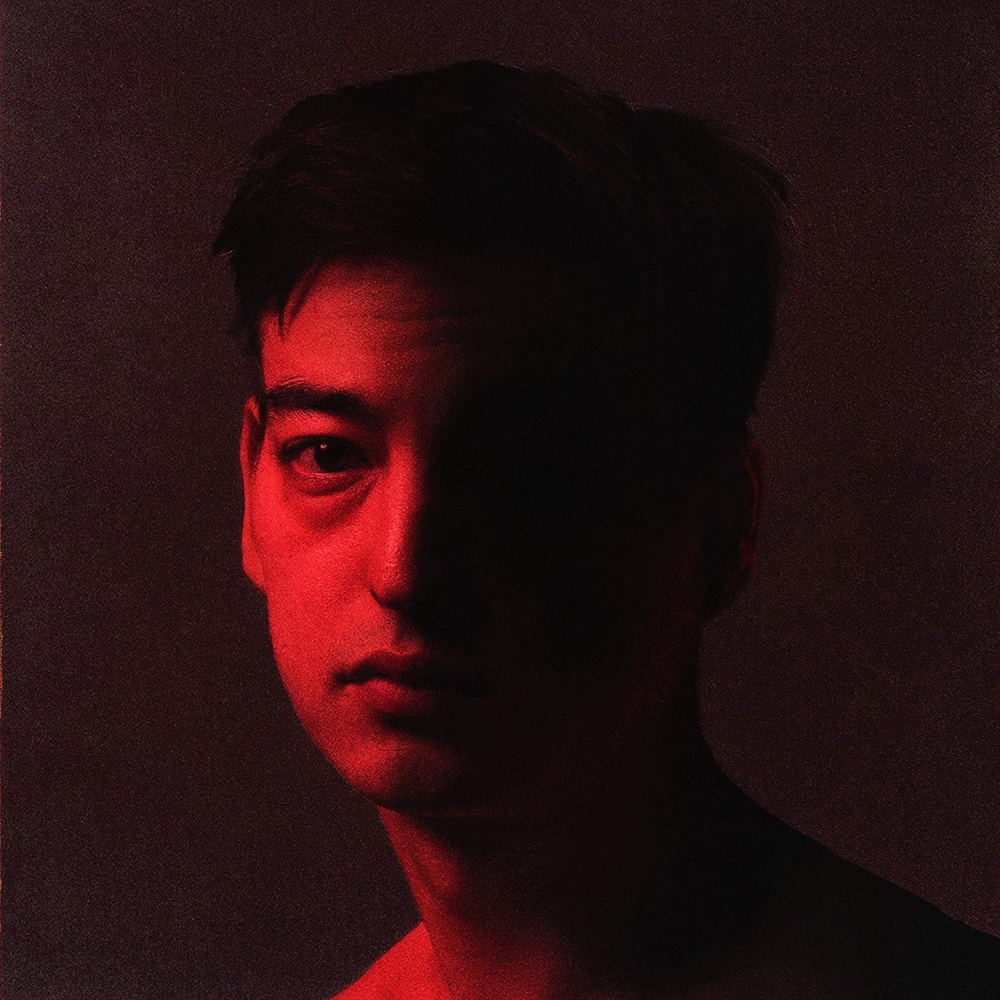
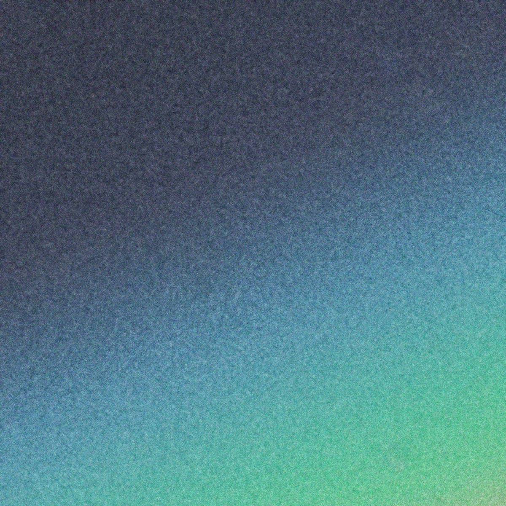

About
Joji adalah seorang penyanyi, penulis lagu, rapper, dan mantan YouTuber asal Jepang. Nama aslinya adalah George Kusunoki Miller. Ia lahir di Osaka, Jepang pada tanggal 18 September 1992. Joji pertama kali dikenal publik melalui saluran YouTube-nya, TVFilthyFrank, di mana ia mengunggah video-video komedi, rap, tantangan ekstrem, dan pertunjukan tari. Ia juga dikenal dengan persona internetnya, Filthy Frank dan Pink Guy.
Penyanyi & Produser musik
Pada tahun 2017, Joji mulai merilis musik di bawah namanya sendiri. Musiknya didominasi oleh genre R&B, lo-fi, dan trip-hop. Album debutnya, Ballads 1, dirilis pada tahun 2018 dan langsung menduduki puncak Billboard Top R&B/Hip-Hop Albums chart. Album studio kedua Joji, Nectar, dirilis pada tahun 2020 dan juga menuai kesuksesan. Album ini debut di nomor 3 Billboard 200 chart dan menghasilkan beberapa single hit, seperti "Run", "Gimme Love", dan "Daylight". Joji adalah salah satu musisi R&B paling populer di dunia saat ini. Ia telah memenangkan berbagai penghargaan, termasuk American Music Award, MTV Video Music Award, dan MTV Europe Music Award.
- Nama lengkap : George Kusunoki Miller
- Umur: 31
- Tempat dan Tanggal lahir: Osaka,Jepang, 18 September 1992
- Kebangsaan: Jepang
- Genre musik : R&B,lo-fi,trip-hip
- Label rekaman: 88Rising
Facts
Joji lahir di Osaka, Jepang pada tanggal 18 September 1992. Ia memiliki ayah yang berasal dari Australia dan ibu yang berasal dari Jepang, Joji pernah menderita penyakit berupa kerusakan jaringan tenggorokan dan penyakit syaraf. Penyakit ini membuatnya berhenti menjadi YouTuber pada tahun 2017. Joji saat ini tinggal di Brooklyn, New York.
Song
Beberapa karya yang popular dari Joji yang dibuat selama ia Berkarier
| Lagu | Album | ||
|---|---|---|---|
| Slow dancing in the Dark | Ballads 1 |

|
|
| Run | Nectar |  | |
| Will he | In Tongues |

|
|
| Glipe of us | smithress |  |
Opinion
Ini beberapa opini dari Artis tentang Joji

Frank Ocean
Penyanyi & Produser musik
Saya sangat menyukai lagu 'Run'. Lagu itu sangat catchy dan memiliki hook yang sangat bagus. Ini adalah lagu tentang cinta dan kehilangan, dan itu sangat emosional.

The Weeknd
Penyanyi & Penulis musik
Saya sangat menyukai lagu 'Gimme Love'. Lagu itu sangat sensual dan memiliki suara yang sangat unik. Ini adalah lagu tentang cinta dan gairah, dan itu sangat seksi.

Kanye West
Rapper,Penulis musik,Produser musik & Perancang busana
Saya sangat menyukai lagu 'Daylight'. Lagu itu sangat optimis dan memiliki suara yang sangat indah. Ini adalah lagu tentang harapan dan masa depan, dan itu sangat inspiratif.

Kid cudi
Penyanyi
Saya sangat menyukai lagu 'Pills'. Lagu itu sangat jujur dan terbuka tentang perjuangan dengan kecemasan dan depresi. Ini adalah lagu yang sangat penting, dan itu telah membantu saya melalui masa-masa sulit.